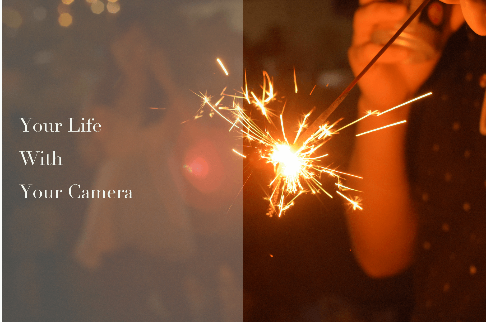

シャッタースピードを速くすると、水滴の飛び散る瞬間やジャンプなどの一瞬の出来事が写真に収められます！逆にシャッタースピードを遅くすると右の写真のような動きのある写真が撮れます。
シャッタースピードが変更できるのはスマホのカメラとの大きな違いではないでしょうか？
iso感度とはどれだけ光に反応しやすいかを示したものです。数値が低いと写真は暗く、数値が高いと写真は明るくなります。
シャッタースピードやF値で写真の写りを決めたらiso感度を変更して適切な明るさに変更してあげましょう。
F値とは絞り値です。F値が低いほど写りは明るく、また背景がボケるようになります。よくカメラっぽい写真と言われるのはF値の低いものが多いです
低いF値が出せるレンズは高価になりがちという特徴もあります。低いF値が出せるレンズを1つ持っているとカメラが楽しくなれる気がします！
センサーサイズだけはカメラを買う前に気にしなくてはいけない項目です。
センサーサイズには何種類かありますが主なものとしては、フルサイズ、APSC、フォーサーズ、などが挙げられます。フルサイズはプロも使うもので値段の高価なものが多いです。初心者にはセンサーサイズAPSCのものがおすすめです。
同じレンズでもセンサーサイズが大きいとより広い画角で撮影することが可能になります。